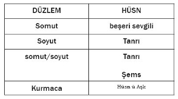
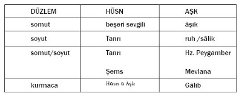
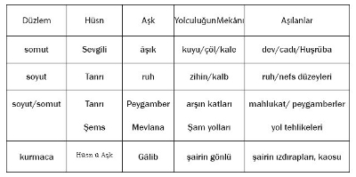
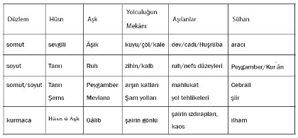

Betül Sinan[59]
Gele bir devr ki bu Gâlib’i yad eyleyeler
Fırsat-ı sohbeti ahbab ganimet bilsün
Şeyh Gâlib
Şeyh Gâlib’in henüz yirmi altı yaşında kaleme aldığı ve ona asıl şöhreti sağlayan Hüsn ü Aşk mesnevisi, onun sadece şairlik yönünü değil, hikâyecilik/kurguculuk kabiliyetini de gösteren önemli bir eserdir. Bu nedenle Hüsn ü Aşk’a “şairin romanı”[60] olarak bakmak hiç de yanlış olmaz. Zira güçlü ve özgün şiirler kaleme alan Gâlib Dede, bu mesnevisiyle de âdeta şiirsel bir roman ya da hikâye yazmıştır. Bu makalede Gâlib’in, Hüsn ü Aşk’ı kurgulayış biçimine ve bu şekilde esere nasıl çokkatmanlılık ve “açıklık” sağladığına yapısalcı bir bakış açısıyla bakılarak eserin arkasında saklı olan derin yapı/örtük mana ortaya çıkarılmaya çalışılacaktır.
Şeyh Gâlib, Hüsn ü Aşk’ta somuttan soyuta uzanan pek çok anlam katmanını tek ve derin bir yapının içine ustaca ve özenle yerleştirmiştir. Bunu metinde yer alan birimlerin birden çok anlama göndermede bulunmasıyla sağlamaktadır. Bu birimler metindeki imge ağını oluşturan ana taşıyıcılardır. Bunlar metinde soyut/somut pek çok çağrışımları bünyelerinde barındırırlar ve bir yanda metni çeşitli okuma ve yorumlara açık hâle getirirken öte yanda gerçeklik/bütünlük arayışını biçim düzleminde somutlaştırırlar. Şu da belirtilmeli ki, Gâlib’in imgelerinin, içerdikleri anlam katmanları bir perspektif değişikliğiyle tek tek vurgulanmaz, vurgulanan tüm farklı katmanların aynı anda bir arada var olduğudur. Bu katmanlar bir bütün oluştururlar ve hepsi eş zamanlı olarak mevcutturlar. Şair bu katmanlar arasında geçişler, atlamalar yapabilmektedir. Bunun en güzel örneğini Gâlib’in Sühan hakkında söyledikleri teşkil eder: “(Sühan) hem (çözülmesi gereken) bir mesele, hem gökten indirilmiş bir kitaptı; hem mucize idi, hem Tanrı tarafından gönderilmiş bir peygamber.” (b.690)
Gâlib hikâyesinin yüzeysel yapısını şahıslar ve bunların birbiriyle olan karşıtlık ve koşutluk ilişkileri üzerine kurmuştur. Mesnevinin derin anlamına ulaşılırken tüm bu şahıslar tek tek ele alınıp incelenebilecek ögelerdir. Ancak burada bir sınırlama getirilip Hüsn, Aşk, bunlar arasındaki “rol değişimi”, Aşk’ın “yolculuk”u, Sühan ve Aşk’ın vardığı nokta, yani “Hüsn’ün Aşk, Aşk’ın Hüsn olması” üzerinde durulacaktır.
Hüsn
‘Hüsn’ göstergesi, Hüsn ü Aşk mesnevisinin ana kahramanlarından birisidir. Yüzeysel/somut okumada sevgiliyi, “kadın” olanı işaret eder. Arayıcının yani Aşk’ın uğruna tehlikeleri göze aldığı “güzel”dir. Şairin Hüsn’ü fiziksel olarak tasviri onun bu yönünü ortaya çıkarır: “Bir lale yanaklı, siyah kâküllü güzel... Âdeta sümbüller içinde bir gül goncası... Ayna (gibi parlak) sinesi sanki civa denizi; inci gerdanlığı da, o denizin girdapları... Dişleri ve ağzı, hiç şüphe yok ki, inciyle, mücevherle dolu gizli bir hazine...” (b.419-20-21)
Ancak Hüsn göstereni yalnızca somut gösterilenlere işaret etmez; soyut göndermelerde de bulunur. En başta Hüsn, İslam tasavvufunda “cemal-i mutlak, güzellik” demektir ki bu da Tanrı demektir. Hüsn’ün etrafında örülen kutsallık ağı bu çağrışıma temel hazırlamaktadır. Şöyle ki, o sürekli lütuf ve keremleriyle anılır mesnevi boyunca. Aşk’a gönderdiği yardımlar devamlı Aşk’ı izlediğini gösterir; Aşk’ı zor durumlardan kurtaran bir koruyucu, kurtarıcıdır. Sühan bunu “O, güzellik ve çekicilik ülkesinin padişahıdır; düşkünlerin imdadına koşandır” (b.1446) şeklinde ifade eder. Mesnevinin en sonunda Hüsn’ün kutsallığı açıkça ortaya koyulmaktadır zaten.
Hüsn ü Aşk, soyut/somut düzlemlerin ayrı kanallardan aktığı anlam katmanlarını barındırmaz sadece. Bazı anlam katmanlarında soyut ve somut iç içe geçmiştir; birbirinden ayrılmaz. Mesnevi, Mevlana-Şems ilişkisi ve miraç paradigması olarak okunduğunda bu durum söz konusu olur. Her iki katmanda her ne kadar fiziksel/somut bir yolculuk mevcutsa da gerek Mevlana gerek Hz. Peygamber aynı zamanda bir iç olgunlaşma süreci de yaşarlar. Dolayısıyla onların yolculuklarının düzlemini “soyut/somut” olarak nitelendirmek mümkündür. Bu bağlamda Peygamber’in aradığı Tanrı ile Mevlana’nın aradığı Şems, Hüsn’ün diğer gösterilenleridir. Hüsn’ün, Aşk’ın peşinde olduğu “güneş” imgesiyle anlatılması, adının anlamı güneş olan Şems ile bir paralellik kurmaya olanak sağlar. Zira Gayret, Hüsn hakkında Aşk’a “Gündüz ve gece durmadan koşturalım; bir gün o güneşi mutlaka görürüz...” (b.1522) demektedir ki Mevlana’nın da tam olarak yaptığı budur. O, “gece gündüz, bir an bile kararı olmadan”[61] Şems’i arar.
Hüsn’ün gösterilenlerinden birini de kurmaca düzlemde bulmak mümkündür ki bu genelde mükemmel/olgun şiir, özelde Hüsn ü Aşk’ın kendisidir. Bu bağlamda Hüsn, ilahi kaynaklı şiiri gösterir. Gâlib bu anlayışını gerek arada yer verdiği “Sakiye Hitap”lar ve şairin, şiirin mahiyetiyle ilgili kısımlarda gerekse hikâye akışında araya sıkıştırdığı beyitlerde dile getirir. Ayrıca Hüsn’ü tarif ederken “(Allah tarafından) ilham edilen feyiz onun hayaliyle besleniyor; anlaşılmaz sırlar onun güzel söyleyişi karşısında mecalsiz (yetersiz) kalıyordu.” (b.456) diyerek âdeta kendi eserinden ve başarısından bahsetmektedir. Yine şairin mesnevinin en sonunda “Define aramada yeni bir usule başvurdum. Bu hazineyi ben buldum ve tamamını da ben tükettim” demesinden şairin eserini ortaya koyma çabasını, peşine düştüğü bir kimya/define olarak gördüğü anlaşılmaktadır.
Tüm bunların sonucunda Hüsn göstergesinin farklı düzeylerdeki gösterilenleri şöyle ifade edilebilir:

Aşk
Mesnevinin diğer bir kahramanı olan Aşk karakteri de pek çok gösterilene göndermeler yapar; onun gösterileni Hüsn’ün temsil ettiğiyle bağlantı kurulduğunda anlam kazanır, yani Aşk’ın bütün içindeki yeri Hüsn’ün temsil ettikleri ile kurduğu koşutluklar sonucu belirlenir. Dolayısıyla ne Hüsn’ün ne Aşk’ın gösterilenleri birbirinden bağımsızdır. Aşk’ın gösterilenleri arasında dizisel bir seçim yapabilmek için onun dizimsel olarak diğer birimlerle ilişkisi göz önünde tutulmalıdır.
Somut düzlemde sevgilisine kavuşmak için birtakım güçlüklere göğüs geren bir âşığı ifade eden Aşk’ın, soyut düzlemde gösterileni, Tanrı’yı arayan ruh veya sâliktir. Tasavvufi boyutu olan bu anlam katmanına göre bezm-i elestten, yani Tanrı katından/vuslatından ayrılan ruh yeryüzüne gelmiştir ve amacı Tanrı’yı bulabilmek ve yine O’na dönebilmektir. Dolayısıyla ruh yeryüzünde sürekli bir arayıştadır. Ruh ve sâlik terimleri birbirinin yerine geçebilen terimlerdir zira her ikisi de soyut bir arayış içerisinde Tanrı’ya ulaşmaya çabalarlar. Bu ruhun tinsel arayışıdır. Hüsn ü Aşk ilk planda tasavvufi bir alegori olduğu için metinde bu seyr-i süluk katmanıyla ilgili pek çok gönderme bulmak mümkündür.
Somut ve soyutun iç içe girdiği düzlemde de Aşk yine Tanrı’yı arayan Hz. Muhammed olarak çıkar okuyucunun karşısına ki bu durum “miraç” alegorisi ile somutlaşır. Mesnevinin başındaki “miraciye” Gâlib tarafından eserinin tacı olarak yorumlandığı gibi girişteki diğer kısımlara göre çok da uzun tutulmuştur. Ayrıca bu kısımda Hz. Peygamber’in anlatılışı ile hikâyede Aşk’ın anlatılışı paralellikler gösterir. Öncelikle her ikisi de güneşe ulaşmaya çalışan “ay” olarak tanımlanır. Her ikisi de fiziki bir yolculuk yapsalar da aynı zamanda zihnî/ruhi bir tekâmül de yaşamaktadırlar. Bu düzlemin bir diğer öğesine göre Aşk, Mevlana’yı gösterir. Zira Mevlana da Aşk gibi yıllarca Şam yollarında Şems’i arar.
Kurmaca düzlemde ise Aşk, Gâlib’in kendisidir. Gâlib mesnevide pek çok yerde kendini Aşk ile özdeşleştirir. Bazen konuşan Aşk mıdır Gâlib midir belli olmaz. Bunun en güzel örneği 1564-1587. beyitler arasında yer alan ‘Dertleşme’ kısmıdır. Burada, yüzeysel yapıda konuşan Hüsn’e kavuşmak için dua eden Aşk’tır ama derin yapıda bunun Hüsn ü Aşk’ı tamamlayıp amacına ulaşmak isteyen Gâlib olduğunu anlamak hiç de zor değildir.
Aşk göstergesinin Hüsn göstergesi ile olan koşutluk ilişkisi sonucunda düşey/yatay eksende şöyle bir tablo yapılabilir:

Rol Değişimi
Hüsn ü Aşk’ın bu rollerini belirlenmesinde temel etken olan rol değişimi, Hüsn ü Aşk’tan önceki mesnevilerde yer almayan bir bölümdür. Gâlib eserine bu kısmı eklemekle kalmaz, çok uzun bir şekilde bu durumu anlatır da. O kadar ki bu bölüm –aradaki 100 beyitlik arasöz kısmı dâhil– 375-1069. beyitler arasında anlatılır. Gâlib’in diğer mesnevilerden farklı olarak bu bölüme önem vermesi tesadüfi değildir. Hikâyenin sonunu da etkilemesi açısından önemli olan bu kısım Hüsn ü Aşk’taki sistematik aşk anlatımının önemli bir parçasıdır. Zira bu sayede Gâlib klasik Batı alegorisini aşmakla kalmaz aşk anlayışına farklı bir boyut da ekler. Somut düzlemdeki bir aşk hikâyesinde âşık/maşuk, özne/nesne ya da N. Türinay’ın ifadesiyle uyaran/uyarıcı[62] karşıtlığı Hüsn ü Aşk’tan daha farklı olabilirken ve böyle bir değişim bu kadar net ve önemli olmayabilirken Gâlib bu konu üzerinde ısrarla durarak eserine farklı göndergeler yüklemeyi bilmiştir. Bu motif ile mesnevinin yapısını değiştirir ve bu yapı değişikliği şairin, yapıtını, göndermelerde bulunduğu anlam katmanlarına uygun hâle getirmesine olanak sağlar.
Mesnevinin ikinci, yani soyut boyutu göz önüne alındığında ve Hüsn Tanrı’yı, Aşk da ruhu simgelediğinde bu rol değişimi büyük anlam kazanır. Çünkü her ne kadar bu dünyada ruh âşık/arayıcı konumunda olsa da onun bu dünyaya gönderilmesini sağlayan ve onu bu arayışa iten daha büyük bir aşk vardır, ki bu mutlak aşk, yani Tanrı’nın insana duyduğu aşktır. Bu noktada mutlak aşkın “Ben gizli bir hazineydim, bilinmeyi istedim ve halkı yarattım” kutsi hadisini hatırlamak gerekir. O kullarını kendini bilmesi ve kendine âşık olması için büyük bir aşkla yaratır ve dünyaya gönderir ama her zaman onların yanındadır, onlara bu arayışta yardımcı olur. Dolayısıyla Gâlib’in mesnevisinde oluşturduğu yapı tasavvuf felsefesiyle bire bir örtüşen bir yapıdır.
Somut/soyut düzlemde ise; Hz. Peygamber’in miraçta Allah’ı araması ve ona kavuşması yine sevgilinin, yani Allah’ın lütfuyladır. Zira Tanrı’nın iradesi, isteği olmadan Peygamber’in ne peygamber olması ne de arşa yükselmesi mümkün idi. Allah da peygamberine “Sen olmasaydın gökleri yaratmazdım” diyerek bu durumu ifade etmektedir âdeta. Gâlib de mesnevisinde Peygamber’in yükselişinin Allah’ın lütuf ve bağışıyla olduğunu sürekli vurgular.
Mevlana, Şems’i aramak için yollara düşmeden, ilk Şems yollara düşüp yıllarca kendine intisab edebileceği bir veli aramış, en sonunda da Mevlana’yı bularak onun yanında kalmaya karar vermiştir. Dolayısıyla Mevlana’ya yönelen ilk Şems olmuştur. Mevlana’nın aşkı Şems’in ona bağlanmasından sonradır.
Kurmaca düzlemde bu rol değişimi yapısı biraz daha sorunludur. Gâlib, mana mesiresini şairlerin arı, duru gönüllerine benzetir ve bunun feyz havuzuyla beslendiğini söyleyerek şairin Allah’tan gelen ilham vasıtasıyla söz söyleyebildiğini belirtir. Zaten bu yüzden sürekli “Saki”ye Hitap’larda bulunur. Dolayısıyla Gâlib’in gönlündeki şiir söyleme kabiliyeti ilham olmadan ortaya çıkamaz. Hüsn ü Aşk’ı söyleyebilmesi ve Allah’ı övebilmesi için önce şiirin ilhamı ya da meyli gerekmektedir, ancak ondan sonra şair şiire yönelebilir. M. Nur Doğan da Gâlib’in “mananın şairlerin kalbine vahiy nuru gibi gökten indiğini” söylemek istediğini belirtmiştir.[63] Dolayısıyla şair kendisine inen/meyl eden mananın peşine düşer, onu söyler. Mana kalbine inmeden o manayı ne yaparsa yapsın söyleyemez.
Yolculuk
Bu karşılıklı koşutluk ve rol değişiminden sonra arayıcının arzu ettiği nesneye kavuşmak üzere zorlu bir yolculuğa çıktığı görülür. Mesnevinin tüm anlam katmanları zaten bir “arayış”ı anlatır. Ancak bu arayış etrafına kurulu imge ağı bu yolculuğun farklı boyutlarını sunar.
Bu yolculuk esnasında Aşk mekânsal olarak bir boyuttan diğerine geçer ve buralarda amacı farklı işlevleri aynı birtakım yaratıklarla karşılaşır: Kuyuda dev, gam çöllerinde cadı, Zatü’s-suver’de Huşrüba (akılçelen) onu sırasıyla yemek, evlenmek ve kandırmak için hapseder.
Somut düzlemde bir âşığın sevgilisine kavuşmada karşılaşabileceği çeşitli engelleri gösteren bu unsurlar, soyut düzlemde coğrafi bir mekânda değil ama içsel/tinsel bir arayışta olan ruhun bu arayışı sırasında geçirdiği aşamaları göstermektedir. Zira ruh bu dünyada çeşitli düzeylerden geçerek olgunlaşır. Bu düzeyler dev/cadı/peri unsurlarının sırasıyla temsil ettikleri bitkisel (hazım), hayvansal (şehvet) ve zihinsel (suret) düzeylerdir.[64] Kısaca tüm bu unsurlar ruhun nefsani duygularını aşarak kemale ermesine göndermelerde bulunurlar. Dev, cadı ve perinin bulundukları mekânlar da ruhun olgunlaşma aşamalarının somut göstergeleridir. Zira ruh yeraltından, yeryüzüne oradan gökyüzüne geçer ve tekâmülünü tamamlar.
Soyut/somut düzlemde Aşk’ın yolculuğu Hz. Peygamber’in gök katmanları arasında yaptığı yolculuğa benzer. O da Aşk gibi tek tek katmanları aşmış ve en sonunda arşı geride bırakarak Allah ile konuşmuştur. Bu katmanlarda Hz. Muhammed önceki peygamberleri ve gök cisimlerini aşar ki özellikle önceki peygamberleri aşması onun manen olgunluğuna da işaret eder.
Mevlana’nın Şam yollarında Şems’i ararken yaptığı yolculuk bir diğer gösterilendir. Mevlana da, Sultan Veled’in İbtidaname adlı eserinde anlattığına göre bu yollarda pek çok engel ve tehlikeyle karşılaşmış ve hepsini aşmıştır.[65]
Kurmaca düzlemde de Gâlib’in Hüsn ü Aşk’ı yazarken geçtiği ruhsal durumlar, zihinsel ve hissî bunalımlar, yani şairin kaosu Aşk’ın yolculuğunun bir gönderilenini oluşturur. Şeyh Gâlib mesnevide de buna açık göndermeler yapmaktadır. Örneğin, cadının bulunduğu gam çöllerinin korkunçluğunu, karanlık ve soğukluğunu anlatırken birden şairliğe getirir konuyu ve kendinden öncekilerin bu harabeleri aşamadığını ama kendisinin bu engeli geçtiğini belirtir. Bir başka deyişle Gâlib mükemmel şiire ulaşacak kadar olgunlaşmış görür kendini.

Sühan
Aşk’ın yolculuğundaki önemli öğelerden biri de başı her sıkıştığında ona yardım eden Sühan’dır. Sühan somut düzeyde sevgiliden haber getiren “aracı”yı gösterir. Anlam katmanlarındaki rolleri ise Aşk ve Hüsn’ün gösterdiklerine göre değişir.
Ruh/sâlikin arayışında Sühan, onun Tanrı’ya kavuşmasına yardımcı olacak, Tanrı’dan haber getirecek bir kaynaktır ki bu kaynak yine Tanrı’nın lütuf ve keremiyle hareket edecek ve âşığa mâşuğunu bulduracaktır. Bu düzlemde Sühan’ın Allah tarafından kullarına yollanan peygamberler veya (Sühan’ın kelime manasının “söz” olduğu göz önünde tutulduğunda) Kur′ân-ı Kerim olması muhtemeldir. Zira peygamberler ve kutsal kitaplar, Tanrı’yı arayan kullara yol gösteren aracılardır; kul ve Rab arasında iletişimi sağlarlar. Rab ancak bu şekilde âşıklarıyla konuşur, tıpkı Hüsn’ün Sühan aracılığıyla Aşk’la iletişim kurması gibi.
Miraç paradigması düzleminde ise Sühan, yine sözle ilişkisi kurulduğunda vahiy meleği Cebrail’i gösterir. Peygamber Allah’ın huzuruna yükselirken, Aşk’ın yanındaki Sühan gibi onun yanında hep Allah tarafından gönderilen Cebrail vardır, ona rehberlik eder. Cebrail, Hz. Peygamber’in hep yanındadır, ta ki sidretü’l-müntehaya kadar. Sühan da belli bir noktadan sonra Aşk’ı Hayret’e teslim eder.
Mevlana-Şems ilişkisi düzleminde Sühan’ın gösterileni biraz daha paradoksaldır. Bu da başlangıçta somut bir düzlemde başlayan arayışın sonuçta soyut bir düzleme kaymasından kaynaklanır. Mevlana, Şems’i yıllarca Şam yollarında aramış ve sonunda bulmuştur ancak bu kavuşma soyut düzlemde gerçekleşir. Sultan Veled, İbtidaname’de Mevlana’nın bu durumunu şöyle anlatır:
(...) Şam seyahatinden büsbütün başka bir halle döndü. Yavaş yavaş temkine gelmedeydi. O güneş, onun varlığından doğmuştu. Madem ki ben oyum diyordu, ne arıyorum öyleyse? Zaten onun güzelliği, lütfu ve letafeti benim. Güzelliğini övüyordum ya, övdüğüm güzellik zaten benim sıfatımdı. Ben kendimi aramadaydım, şarap gibi küp içinde kendi kendime coşup köpürmedeydim.[66]
Dolayısıyla Mevlana’nın Şems’i somut olarak bulamayışı onların arasında somut bir haberci/aracıyı mümkün kılmaz. Ancak Mevlana bundan sonra Şems ile tam bir özdeşleşme duygusuyla şiirlerini kaleme alır ve kendi mahlasını kullanmak yerine, aşkını, özlemini, umutsuzluğunu terennüm eden şiirlerin çoğunda mahlas olarak dostunun adını kullanır.[67] Sühan’ın söz/şiir anlamından da yola çıkarak Şems ve Mevlana arasındaki tensel olmasa da tinsel aracıyı bu açıdan şiir olarak görmek yanlış olmasa gerektir.
Son olarak kurmaca düzleminde Sühan, şairin gönlüne Tanrı tarafından ilham olunan şiiri göstermektedir. Bu nedenle şiir bir mucizedir ve ilham şairin bu mucizeyi keşfetmesinin tek yoludur. Sühan’ın da bütüne eklenmesiyle ortaya şu tablo çıkar:

Ve Son: Hüsn’ün Aşk, Aşk’ın Hüsn Olması
Hüsn ü Aşk’ta göstergelerin tek ve durağan/kalıcı gösterileni yoktur; gösterilenlerin birbirine dönüştüğü görülmektedir. Sühan’ın kılıktan kılığa girmesi veya Hüsn’ün Aşk, Aşk’ın da Hüsn olması bu duruma örnektir. Özellikle hikâyenin sonunda Hüsn ve Aşk’ın gösterdiği âşık/mâşuk gösterilenlerinin iç içe girmesi varılan noktada gösteren ve gösterilenlerin birliğine işaret eder. Bu birlik aslında hikâyenin ta en başından itibaren mevcuttur ama arayıcı Aşk bunu görememiştir. Dolayısıyla Gâlib’in anlattığı hikâye tamamen “yanlış bir düşünce” (b.1999) üzerine kuruludur. Aşk iki göstergenin iki farklı gösterilene işaret ettiği sanısına kapılır. Oysa ne iki ayrı gösteren vardır, ne de iki ayrı gösterilen. Gösteren de gösterilen de, Hüsn de Aşk da, âşık da mâşuk da birdir. Bu nedenle Hüsn ü Aşk göstergeler arasında bir karşıtlıktan değil, koşutluktan bahseder. Bu durum hikâyenin tüm yapısında görülebilir. Zira yüzeysel yapıda birbirine zıt görünen unsurlar derin yapıda aslında hep bir gösterilene işaret ederler ve bu, göstergeler arasında zıtlık değil, paralellik oluşturur. Dev/cadı/peri her ne kadar Aşk’ın karşısına, sevgilisine ulaşırken engel olarak çıksa da bunlar aslında ona kavuşması için aşmasının zorunlu olduğu unsurlardır. Çünkü Hüsn’e giden yol dev/cadı/periden geçer. Somut düzlemde bunlar “engel”in göstereni olsalar da derin yapıda arayıcının olgunlaşması için “yardımcı”dırlar. Bu bakımdan Sühan, Molla Cünun ve Gayret ile birlikte Hüsn’ün gösterenleri olurlar. Arayıcının yapması gereken bu göstergelerin gösterilenini doğru tayin edebilmek ve iç olgunlaşmayı yaşayabilmektir. Çünkü ancak bu şekilde aradığına kavuşur. Bu durumda Hüsn ü Aşk’ın yapısındaki gösteren ve gösterilenlerin birliğini şu şekilde göstermek mümkündür.
Mekânsal bağlamda bakıldığında da yine farklı göstergelermiş gibi görünen mekânların hep aynı gösterileni işaret ettiği görülür. Aşk’ın yolculuğundaki Mana Mesiresi ile Diyar-ı Kalb’in aynı mekânlar olduğu sürekli vurgulanır. Dolayısıyla Aşk’ın yolculuğu iki farklı mekân arasında vuku bulmaz. Aşk tek bir mekân dâhilinde yolculuk yapar. Aslında o fiziki bir yolculuğa çıkmamıştır; onun arayışı kendi içinde/zihninde/gönlündedir. Vardığı nokta farklı bir uzam değildir, farklı bir ruh, zihin ve gönül hâlidir. Dolayısıyla o zihni ya da kalbinden başlar yolculuğuna ve yine oraya varır. Bu nedenle aşığın bu yolculuğunu bir “geri dönüş yolculuğu” olarak adlandırmak yanlış olmaz:
Yeniden vuslat arayan ruh kendi içindeki zıtlıkların birliğini sağlayıp nefsini arındırdığında Tanrı’ya yine kendi içinde kavuşur, Hz. Peygamber kalbini arındırdığında, temizlediğinde ancak gerçek miracı yaşayabilir, Mevlana kendi ruhunun mahiyetini kavradığında Şems’e ulaşmıştır, Gâlib de gönlünü saf ve arı tuttuğunda ancak ilahi vahye yani ilhama mazhar olabilir ve şiir söyleyebilir. Bütün arayıcı âşıklar aradıklarını aslında gönüllerinde bulmuşlardır yani. “Ben size şah damarınızdan daha yakınım”ın sırrını kavrayıp gösterileni yanlış yerde aramayarak gösterenlerin mahiyetini kavrayabilmiş kişilerdir sevgilisine kavuşanlar.
Şeyh Gâlib şairlik ve hikâyecilik yönünü en iyi şekilde gösteren bu eserle az söz sarf ederek çok şey anlatmayı başarabilmiştir. Zira o çok çeşitli anlam katmanlarını tek bir yapının üzerine oturtmuş bu sayede pek çok hikâyeyi eş zamanlı olarak anlatabilmiştir. Dolayısıyla Hüsn ü Aşk onun da belirttiği gibi yalnızca bir “bela (kötü olaylar) kitabı” olarak okunmamalıdır. Bu, Gâlib’in şairlik ve kurguculuk yönünü küçümsemek ya da görmezden gelmek olur çünkü. Şairin kendisi de bu basiretsizliğe karşı okuyucusunu uyarır:
Eğer dersem ki havalar açıldı geldi bahar
Murad odur ki benimle mahabbet eyledi yar
Ya söylesem ki çemen gonceleri zeyn oldu
Odur garaz ki tebessümle söyledi dildar[68]
Bu beyitler Hüsn ü Aşk’ın okunmasında da rehber olması gereken beyitlerdir. Zira Gâlib kullandığı simge ve motiflerin bir de derin anlam yapıları olduğunu, gösterenlerin farklı gösterilenlere işaret edebileceğini, eserlerinin görünürdeki anlamlarının altında örtük manaların yattığını haber verir âdeta. İşte bu uyarının peşine düşülerek Gâlib’in gizli anlamlar ülkesine yani Diyar-ı Kalbi’ne ulaşmak için çıkılan bir yolculuğun sonucudur bu çalışma.